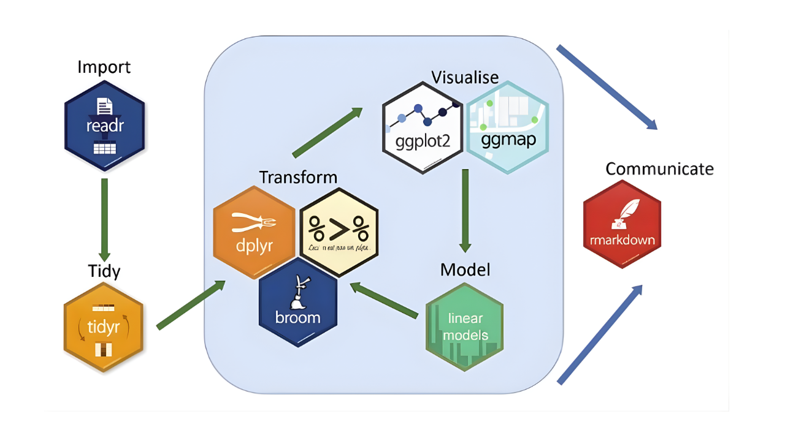
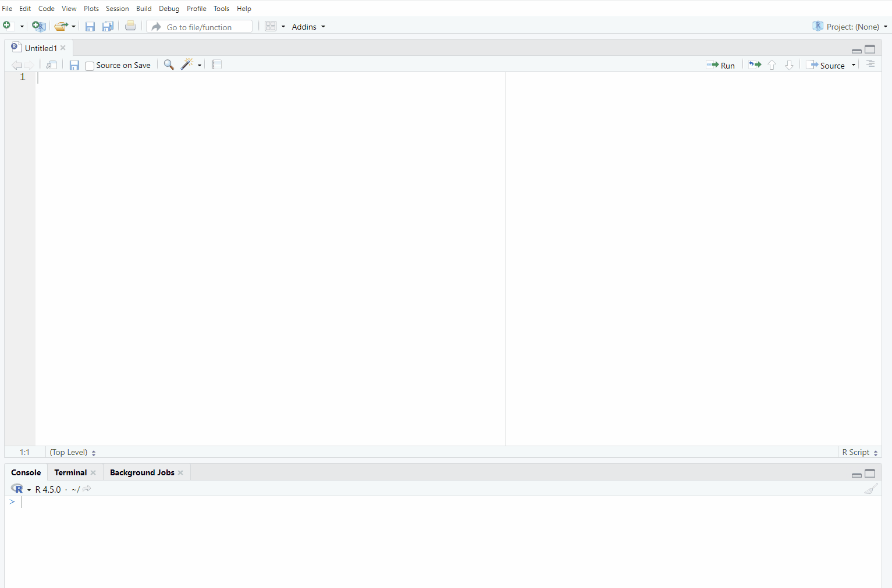
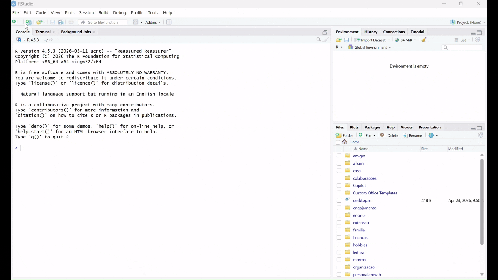

getwd()Lesson 4: The Tidyverse and Reading Data
Learning Objectives
By the end of this lesson, you’ll be able to:
- Install and load the tidyverse package in R.
- Check and modify the working directory in an R session.
- Create an R project.
- Read tabular data into R using tidyverse.
- Use both base R and tidyverse functions to view a dataset.
- Upload project documentation based on new project information.
Lecture - Packages, Working Directories, and R Projects
Lecture
Packages and Libraries
R includes a number of pre-installed functions and data that you can use upon installation. This is commonly called “base R”. However, for certain tasks, you will need to use additional tools to accomplish work and facilitate workflows. In this session, we will learn about R packages and libraries.
- Packages: Packages are collections of functions, datasets, and tools created to extend the capabilities of R. They can be installed to access additional functionality, data analysis tools, visualizations, and sample datasets. There are many R packages available, but here is a link to some of the most common/useful ones: list of useful R packages
- Libraries: Once you install a package, it is stored on your computer in a folder (called a library), where R can access its functions and data. You only have to install packages once, and you can use the
library()function to load packages into your R session.
Tidyverse
We will be using a collection of R packages called the tidyverse. The tidyverse is commonly used for research and data science, as it is designed to facilitate data manipulation, analysis, and visualization. The tidyverse packages are designed to work well together. They all use the same syntax and rules, which makes learning how to use them easier. The tidyverse website has a lot of documentation and reference material that you can use if you are struggling with how to approach a specific task.

Let’s take a closer look at the tidyverse website.
Setting the Working Directory
In the previous session on files and directories, we learned about relative file paths. Remember, relative file paths refer to the location of a file or folder relative to your current location in the directory. R uses relative file paths when reading data and using libraries, so it is important for you to understand this concept. You can manually set a working directory in R, or you can use a feature called R Projects. We will review both methods in this session.
One way to set a working directory is to use the setwd() function. This function tells R where to look for files and where to save outputs. But, setting the working directory using this manual method means that the settings are valid for that session only.
You can access the setwd() function in two ways:
In the console or your script, use the setwd() function manually by inserting your file path in the brackets and running the code:
setwd("directory-name/secondary-directory/etc...")
OR
Select the Session tab in the toolbar, and then select Set Working Directory:

But here’s the problem…
Using setwd() can break your code when:
- Someone else tries to run it on their machine.
- You move your project folder.
- You’re running your code on a server or in cloud environments like RStudio Cloud.
Since file paths are hardcoded and depend on your machine, this practice is not reproducible.
R Projects
R Project is a feature in RStudio (and base R) that provides a self-contained working environment. An R Project creates an .Rproj file in a named folder, and that folder becomes the root directory of your project. Every time you open the project (via the .Rproj file), R automatically sets the working directory to that folder. You can reference files relative to the project root, with no need to hardcode file paths.
This is useful when you’re working on multiple analyses, sharing code with collaborators, or version-controlling with Git. An .Rproj file is a configuration file that tells R Studio how to set up and manage the specific working environment you require for your project. It is a good practice for reproducible research.
Tutorial - Create an R Project and Read Data into R
Create an R Project
In this tutorial, we will read and inspect the dataset from our example project. First, we need to create an R project inside the project folder that you created in the previous lesson.
To create an R Project, select File > New Project
Because you already created the folder to contain the project in the previous session, you should choose “Existing Directory” here. If you had not created the folder, you could choose “New Directory”, and R Studio would also create the folder for you.
Click on “Browse” and then navigate to the folder
survey_studentthat you just created.Click on “Create Project”.
Now you have created an R Project!

To better understand how the R Project works, type this command in the console:
This command will show the working directory that R is looking at. To see how R Projects can be very useful, let’s do a test:
- Close R Studio.
- Navigate to the
survey_studentfolder on your computer.
- You now should have a file called
survey_student.RProjin your folder. Open it.
As you can see, the file opens R Studio.
Enter getwd() into the console again.
It should show the same working directory. Every time you open the project (via the .Rproj file), R automatically sets the working directory to that folder.
Create an R script
Now, let’s create a new R script.
Select File > New File > R Script

Install the tidyverse Package
To install a package we use the function install.packages().
Packages only need to be installed once. You should always install packages in the R console, rather than in a script to avoid reinstalling them each time the script runs. Some packages may take several minutes to install, depending on their size and the speed of your connection. You do not want to do this every time you run a script!
install.packages("tidyverse")Load Libraries
Once a package is installed, you load it using the library() function.
It’s best practice to load packages in your script so that others can see what packages are required to run the code.
# Load package
library(tidyverse)Read Data with Tidyverse
In order to start working with a dataset in R, we first need to import, or “read in”, the data. As mentioned in the session “Reproducible Research: Moving From Excel to Scripting”, we will be working with .csv files, but R is capable of reading in other file types as well. As you work through this tutorial, type in the chunks of code inside your R script, and send them to the console to see the results.
Read a .csv File
To import a .csv file, we can use the read_csv() function and assign it to a new object called survey_data. We’re creating this new object so that we can call it in different functions later on.
# Import data
survey_data <- read_csv("data/raw/survey_student_rawdata.csv")Now that you have imported the data, take a look at the environment pane on the top right. You should see the survey_data object listed under Data.
Tibbles
A tibble is a type of data frame (tabular data stored in columns and rows) used in the tidyverse. Tibbles improve how data is displayed in the console by only showing the first 10 rows and clearly indicating the data type of each column. This makes it easier to quickly understand the structure of the dataset.
Tibbles help to avoid some common issues found in base R data frames. For example, they do not automatically convert text into factors, and they handle column names more consistently.
The read_csv() function imports data as a tibble by default, making it easier to work with using other tidyverse tools.
Inspect Your Dataset
Every time you import a dataset into R, it is good practice to confirm that it was imported correctly. This will allow you to identify potential errors in the data that might need to be fixed before data analysis, and to understand the structure of the data so that you can explore it. We’ll start with some commands that were covered in the Data Types and Structures lesson, and then move to some new ways to explore data.
Looking at the Dataset
The View() command is a way to see the whole dataset in a spreadsheet view.
# View the dataset
View(survey_data) As mentioned above, thanks to tidyverse, the tibbles package improves how data is displayed. You can inspect your data by asking R to show the object survey_data.
# Check the dataset
survey_data Listing Column Names
Use the names() function to print a list of all of the column names in the dataset.
# View column names
names(survey_data) [1] "Timestamp"
[2] "Name"
[3] "Email"
[4] "Date of birth"
[5] "Age"
[6] "Province"
[7] "Gender"
[8] "Year of Study"
[9] "Field of Study"
[10] "How many hours per day do you use each platform? [Facebook]"
[11] "How many hours per day do you use each platform? [Instagram]"
[12] "How many hours per day do you use each platform? [Snapchat]"
[13] "How many hours per day do you use each platform? [Tiktok]"
[14] "How many hours per day do you use each platform? [X (Twitter)]"
[15] "How many hours per day do you use each platform? [Other]"
[16] "On average, how many hours of sleep do you get per night?"
[17] "What devices do you use to access social media"
[18] "Please indicate how much you agree or disagree with the following statements about social media and your mental health: [Social media helps me feel connected to others.]"
[19] "Please indicate how much you agree or disagree with the following statements about social media and your mental health: [Social media makes me feel anxious or stressed.]"
[20] "Please indicate how much you agree or disagree with the following statements about social media and your mental health: [Social media distracts me from academic work.]"
[21] "Please indicate how much you agree or disagree with the following statements about social media and your mental health: [Social media improves my mood when I feel lonely.]"
[22] "Select any of the following reasons for using social media:" Head function
The head() function will display the top rows of the dataset.
# View first rows of data
head(survey_data) Summary Function
The summary() function gives you a quick overview of your data. It automatically calculates basic statistics for numeric data, and will provide counts of values for factor data.
Let’s start by using the summary() function on the whole dataset:
# See a summary of the data
summary(survey_data) You’ll see that it gives a breakdown of each variable (column) of our dataset.
For character data, it shows the length (how many rows), class (data type), and mode. Mode is more complicated, and you’ll see for character data it just shows the data type. However, for factor data, it will show the full counts of each category. Because none of our raw data is classified as factors, we won’t see this yet, but this is something we’ll cover in the next session.
For numeric data, summary() gives a quick set of descriptive statistics that can help you understand the distribution of a variable:
- Min.: The smallest value in the column.
- 1st Qu.: 1st Quartile, which is the value where 25% of the data falls below.
- Median: The middle value, where half the data is above and half is below.
- Mean: The average of all values.
- 3rd Qu.: 3rd Quartile, where 75% of the values fall below.
- Max: The largest value in the column.
- NA’s: the number of NA (absent) values in the column.
You can see that all of the variables in our survey data are either character or numeric. This is very common with raw data, but as mentioned, we’ll start converting some of these data types in the next session to prepare our data for analysis.
Table Function
The table() function creates a frequency table that counts how many times each unique value appears in a vector (column). It is a great way to get a quick count of values or categories in a variable.
The syntax is as follows;
table(data-frame$variable)
Let’s try this with the Age variable.
# See a frequency table of age
table(survey_data$Age)
16 17 18 19 20 21 22 23 24 25 26 27 29
27 50 49 68 59 57 44 45 36 20 8 10 1 You’ll see that you get two rows of numbers:
- The first row represents the values in the
Agevector (17-29).
- The second row represents the number of occurrences of each value.
You can also add multiple variables into the table() function to create a cross tabulation (also called a contingency table). The following code creates a table using the Age and Gender variables:
# Get a cross tabulation of age and gender
table(survey_data$Age, survey_data$Gender)
Female Male Non-binary Prefer not to say
16 5 16 4 0
17 31 17 1 1
18 27 19 2 1
19 28 36 1 0
20 21 34 0 1
21 31 23 0 1
22 17 19 4 2
23 21 23 0 0
24 19 14 1 1
25 6 8 4 0
26 2 6 0 0
27 5 5 0 0
29 0 1 0 0In this table, the ages appear in rows, and the gender values are in the columns. Each cell in the table shows the number of observations for each combination of age and gender.
As mentioned in the File Management lesson, using spaces in file names causes problems for coding languages, and this is the same for variable and object names as well. In the next session we’re going to clean up the variable names to avoid this. However, for now, you can surround variable names that have spaces with quotation marks.
# Get a frequency table of Year of Study
table(survey_data$"Year of Study")
1 2 3 4
166 143 127 73 Count Function
The count() function (from the dplyr package in the tidyverse) is similar to the table() function, and is used to count how many times a value occurs in a dataset.
Let’s start by using the function for our full dataset.
# Count number of observations in the dataset
count(survey_data) # A tibble: 1 × 1
n
<int>
1 525This function shows the number of rows in our data. While it can be helpful for a quick reminder, it is not useful on its own. The real value of the count() function shows when applied to a vector (column) in a dataset, or to combinations of multiple vectors.
The syntax is as follows:
count(data-frame, variable1, variable2, etc.)
Let’s try it with the Age variable.
# Get the number of observations by age
count(survey_data, Age) # A tibble: 14 × 2
Age n
<dbl> <int>
1 16 27
2 17 50
3 18 49
4 19 68
5 20 59
6 21 57
7 22 44
8 23 45
9 24 36
10 25 20
11 26 8
12 27 10
13 29 1
14 NA 51You’ll see that it gives you two columns:
- Age: This shows each value in the
Agevector.
- n: This shows how many instances of each value there are in the vector.
Now let’s try doing this with two variables.
# Get the number of observations by age and gender
count(survey_data, Age, Gender) # A tibble: 51 × 3
Age Gender n
<dbl> <chr> <int>
1 16 Female 5
2 16 Male 16
3 16 Non-binary 4
4 16 <NA> 2
5 17 Female 31
6 17 Male 17
7 17 Non-binary 1
8 17 Prefer not to say 1
9 18 Female 27
10 18 Male 19
# ℹ 41 more rowsYou’ll see that there’s a column for each value in both the Age and Gender vectors, as well as a count for how many values match the two values in each vector. You’ll also notice the following message below the output:
ℹ 37 more rows
ℹ Use print(n \= ...) to see more rows
This means that there are 37 rows that have not been displayed. The reason for this is because the result is a tibble, and tibbles, by default, only show the first 10 rows. To see all the results, you can use the print() function. The print() function takes as arguments a tibble and the number of observations to show, with the following syntax:
print(tibble, n = number of observations)
If you use n = Inf, R will print all observations.
There are two ways to show all rows resulting from the count() function.
- Create an intermediate object called
obs_agebygenderto feed into theprint()function.
# Get the number of observations by age and gender
obs_agebygender <- count(survey_data, Age, Gender)
# Print all results
print(obs_agebygender, n = Inf) # A tibble: 51 × 3
Age Gender n
<dbl> <chr> <int>
1 16 Female 5
2 16 Male 16
3 16 Non-binary 4
4 16 <NA> 2
5 17 Female 31
6 17 Male 17
7 17 Non-binary 1
8 17 Prefer not to say 1
9 18 Female 27
10 18 Male 19
11 18 Non-binary 2
12 18 Prefer not to say 1
13 19 Female 28
14 19 Male 36
15 19 Non-binary 1
16 19 <NA> 3
17 20 Female 21
18 20 Male 34
19 20 Prefer not to say 1
20 20 <NA> 3
21 21 Female 31
22 21 Male 23
23 21 Prefer not to say 1
24 21 <NA> 2
25 22 Female 17
26 22 Male 19
27 22 Non-binary 4
28 22 Prefer not to say 2
29 22 <NA> 2
30 23 Female 21
31 23 Male 23
32 23 <NA> 1
33 24 Female 19
34 24 Male 14
35 24 Non-binary 1
36 24 Prefer not to say 1
37 24 <NA> 1
38 25 Female 6
39 25 Male 8
40 25 Non-binary 4
41 25 <NA> 2
42 26 Female 2
43 26 Male 6
44 27 Female 5
45 27 Male 5
46 29 Male 1
47 NA Female 27
48 NA Male 18
49 NA Non-binary 1
50 NA Prefer not to say 4
51 NA <NA> 1- Since this new object will not be needed elsewhere in the script, you can avoid creating the object by using a technique called “nesting”. Nesting allows you to put one function inside another, so that the result of the first function is fed directly as an argument into the next function.
# Get the number of observations by age and gender and print all results
print(count(survey_data, Age, Gender), n = Inf) # A tibble: 51 × 3
Age Gender n
<dbl> <chr> <int>
1 16 Female 5
2 16 Male 16
3 16 Non-binary 4
4 16 <NA> 2
5 17 Female 31
6 17 Male 17
7 17 Non-binary 1
8 17 Prefer not to say 1
9 18 Female 27
10 18 Male 19
11 18 Non-binary 2
12 18 Prefer not to say 1
13 19 Female 28
14 19 Male 36
15 19 Non-binary 1
16 19 <NA> 3
17 20 Female 21
18 20 Male 34
19 20 Prefer not to say 1
20 20 <NA> 3
21 21 Female 31
22 21 Male 23
23 21 Prefer not to say 1
24 21 <NA> 2
25 22 Female 17
26 22 Male 19
27 22 Non-binary 4
28 22 Prefer not to say 2
29 22 <NA> 2
30 23 Female 21
31 23 Male 23
32 23 <NA> 1
33 24 Female 19
34 24 Male 14
35 24 Non-binary 1
36 24 Prefer not to say 1
37 24 <NA> 1
38 25 Female 6
39 25 Male 8
40 25 Non-binary 4
41 25 <NA> 2
42 26 Female 2
43 26 Male 6
44 27 Female 5
45 27 Male 5
46 29 Male 1
47 NA Female 27
48 NA Male 18
49 NA Non-binary 1
50 NA Prefer not to say 4
51 NA <NA> 1In this case, count(survey_data, Age, Gender) is nested inside the print() function. The results are the same, but the code is more efficient.
There is an additional way to make this code even simpler. We will learn all about it in an upcoming section about “pipes.”
Save Your Script
This isn’t a useful script, but you may want to refer to it again for practice. Go to File > Save As and save it in the scripts folder that we just created.
Save your script as: survey_student_data-explore.R